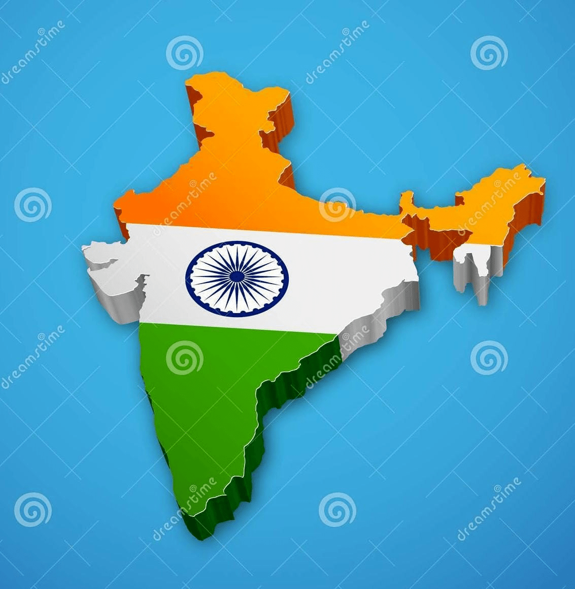

Once again spread the happiness of Independence to all our beloved citizens
Also bring the happiness and celebrate this great moment with maintaining COVID-19 protocols
It's time to sing our National Anthem from our heart
Jana-gana-mana
Jana-gana-mana-adhinayaka, jaya he
Bharata-bhagya-vidhata.
Punjab-Sindh-Gujarat-Maratha
Dravida-Utkala-Banga
Vindhya-Himachala-Yamuna-Ganga
Uchchala-Jaladhi-taranga.
Tava shubha name jage,
Tava shubha asisa mage,
Gahe tava jaya gatha,
Jana-gana-mangala-dayaka jaya he
Bharata-bhagya-vidhata.
Jaya he, jaya he, jaya he, Jaya jaya jaya, jaya he!
Our Nation Flag with tricolour
- Deep Saffron on top indicating strength and courage of the country
- White in middle dipicts peace and truth
- Dark Green in below it symbolizes the fertility, growth and auspiciousness of the land
- And in betwen have Ashoka Chakra is a dipiction of Dharma Chakra

INDIA
Stay Safe, Stay Happy
A warm wish from Arindam